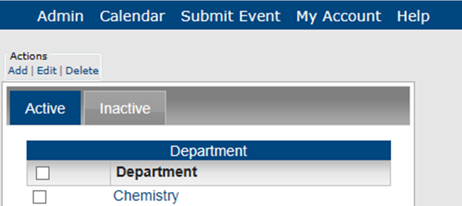
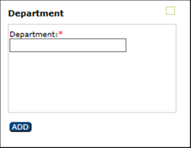
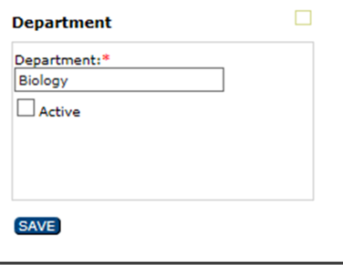

Configure Departments in Master Calendar
A department in Master Calendar is a division of a business specializing in a particular product or service, such as a Personnel department, or a division of a school or college such as the Department of Chemistry. You can configure departments for Master Calendar so that additional information/clarification can be provided for an event. For example, if you are managing calendars for a university campus and you specify a multi-use building as an event location, you could also specify the department that is hosting/sponsoring the event. This topic guides you in adding departments, activating departments, inactivating departments, editing departments, and deleting departments.
- From the Admin Panel, navigate to Admin > Configuration > Departments. The Departments page opens on the Active tab, listing all currently active departments in Master Calendar.

- To define a new department, under Actions, click Add. The Department dialog box opens. You use this dialog box to name the department.

- In the Name field, enter the name for the department.
- On the Department dialog box, click Add. The Department is added to Master Calendar as an active department.
- To rename or activate/de-activate an existing department, choose from the Active or Inactive tab.
- Select the department you want to rename, activate or deactivate.
- Under Actions, select Edit. The Department dialog box opens, showing the department name.

- Edit the text to rename the department.
- Use the Active checkbox to control whether this department is available for selection in Master Calendar.
- Click Save.
- To delete a department select one or more departments to be deleted from the Active or Inactive tab. To select all departments on the currently opened page for deletion in a single step, select Department. If you have multiple pages of departments to delete, you must repeat this entire process on each page.
If you delete an active department, any current events that use this location are not affected. The deletion simply means that going forward, the department is not available for use.
- Under Actions, click Delete. You will be prompted to confirm that you want to delete all the selected departments.
- Click OK in the message. A message confirms that all the selected departments were successfully deleted.
- Click OK.